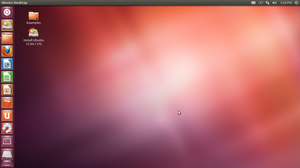
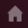
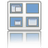
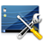

Unity
 Unity
Unity  ist eine Eigenentwicklung der hinter Ubuntu stehenden Firma Canonical . Erstmals unter Ubuntu 10.10 mit dem inzwischen eingestellten "Netbook Remix" eingeführt, ist sie ab Ubuntu 11.04 die neue Standard-Desktopoberfläche. Sie ersetzt dort das ursprünglich erwartete GNOME 3, das auf dem Fenstermanager
ist eine Eigenentwicklung der hinter Ubuntu stehenden Firma Canonical . Erstmals unter Ubuntu 10.10 mit dem inzwischen eingestellten "Netbook Remix" eingeführt, ist sie ab Ubuntu 11.04 die neue Standard-Desktopoberfläche. Sie ersetzt dort das ursprünglich erwartete GNOME 3, das auf dem Fenstermanager mutter (Metacity+Clutter) und einer neuen GNOME Shell basiert.
Von einer "richtigen" Desktop-Umgebung kann man nicht sprechen, da das Programm im Gegensatz zu GNOME, KDE und anderen bekannten Namen keine eigenen Programme mitbringt. Der bisherige Standard, die Desktop-Umgebung GNOME 2, wurde in Ubuntu 11.04 noch unter dem Namen "Ubuntu Classic" als Alternative geführt, entfiel jedoch ab Ubuntu 11.10 und wurde stattdessen durch "Unity 2D" ersetzt. Ab Ubuntu 12.10 wurde "Unity 2D" ersatzlos gestrichen.
Ob sich der Ansatz, die insbesondere auf Netbooks, Tablets und Smartphones sehr kleine Bildschirmfläche optimal zu nutzen, auch erfolgreich auf den klassischen PC oder ein Notebook mit großem Bildschirm übertragen lässt, bleibt abzuwarten. Während er für Anwender mit PC-Erfahrung naturgemäß eine Umstellung bedeutet (eine der optisch auffälligsten Änderungen ist die Verbannung von zahlreichen GNOME-Panel-Applets), wird Anfängern ohne Vorkenntnisse eine einfach strukturierte und zu bedienende Oberfläche geboten.
Mittlerweile gab Canonical im April 2017 bekannt, dass das bisherige Unity 7 sowie das bislang unveröffentlichte Unity 8, welches auf den zugleich eingestellten Ubuntu Phones bereits eingesetzt wurde, eingestellt wird. Unity 7 soll jedoch ohne weitere Entwicklung weiterhin nachinstallierbar sein, wohingegen Unity 8 von der Community weiterentwickelt werden will. Dabei arbeiten die beiden Projekte yunit.io sowie Ubports eng zusammen und wollen gemeinsam nur eine einzige Version bereitstellen.
Der Schwerpunkt von Ubports liegt jedoch auf der Fortführung von Ubuntu Phone und der Convergence, also dem Smartphone als PC, mit einer vereinheitlichten Oberfläche. yunit.io will hingegen Unity 8 für den Desktop PC vorantreiben. Das aus programmiertechnischer Sicht völlig überalterte und schwer am Leben zu erhaltende Unity 7 wird voraussichtlich nicht mehr gepflegt und langfristig von Unity 8 ersetzt. Seit Ubuntu 17.10 beinhalten fertige Installationsmedien nur noch GNOME. Auch nach einem Upgrade wird automatisch auf GNOME umgestellt, doch man kann bislang auch noch die Unity-Umgebung im Anmelde-Schirm (via Zahnrad-Symbol) auswählen.
Installation¶
Hinweis:
Die parallele Installation mehrerer Desktopumgebungen kann zu ungewünschten Nebeneffekten führen. Einstellungen des Themas, Schriftbildes, Panels, der Icons usw. können andere Desktopumgebungen negativ beeinflussen. Für das reine Ausprobieren einer alternativen Desktopumgebung empfiehlt sich deshalb die Nutzung eines LIVE Systems per CD/DVD oder USB-Stick!
Achtung!
Der Umbau eines Ubuntu Systems mit z.B. Kubuntu mit KDE Plasma zu einem Unity ist zwar theoretisch möglich, führt in der Praxis jedoch oft zu nicht näher definierten Probleme, deren Ursache oft nicht klar ist. Deshalb wird im Fall eines langfristigen Wechsels der Desktopumgebung die Neuinstallation mit dem richtigen Installationsmedium von Ubuntu empfohlen.
Folgendes Paket muss für alle Ubuntu-Versionen bis 17.04 installiert werden:
ubuntu-desktop
 mit apturl
mit apturl
Paketliste zum Kopieren:
sudo apt-get install ubuntu-desktop
sudo aptitude install ubuntu-desktop
Folgendes Paket muss ab Ubuntu 17.10 installiert werden:
unity
mit apturl
Paketliste zum Kopieren:
sudo apt-get install unity
sudo aptitude install unity
Der Unity-Desktop¶
|  |
| Unity-Desktop von Ubuntu 12.04 (Desktop-CD) |
Diese Beschreibung dient als Einstieg in die
Bedienung:
Startmenü
Panel
Tastaturkürzel
Anzeigen
Arbeitsflächen
und die Einstellungen:
interne Konfiguration
Arbeitsbereich
Compiz-Parameter
Diejenigen Anteile, die nicht direkt Unity betreffen (z.B. Empathy), aber auch hierüber eingestellt werden können, werden nicht beschrieben und sind ggf. selbst zu erarbeiten bzw. den jeweiligen Wiki-Artikeln zu entnehmen. Auch in den folgenden Unity-Unterartikeln wird nicht auf die Bedienung der Anwendungen und Programme als solche eingegangen.
Mit welcher Desktop-Variante man arbeiten will, wählt man bei der grafischen Anmeldung via LightDM aus. Nach der Auswahl des Benutzers erscheint unten die Maske der Sitzungsparameter – dort wählt man zwischen:
"Ubuntu" - Unity 3D-Desktop
"Unity 2D" - Unity 2D-Desktop, nur bei Ubuntu 12.04
bzw. eine der anderen Varianten zu den genannten Desktop-Umgebungen aus. Nach der Eingabe des Anmelde-Passwortes wird diese Auswahl aktiviert. Diese Einstellung bleibt bis zu einer erneuten Auswahl bestehen.
Hinweis:
Die Einstellungen für die Desktop-Varianten "Ubuntu" bzw. "Unity 2D" werden für jeden Benutzer getrennt abgespeichert - man kann also Unity-Parameter nicht bzw. nur eingeschränkt systemweit konfigurieren. Daher muss jeder Benutzer seine Einstellungen separat vornehmen, da diese im eigenen Homeverzeichnis abgelegt werden.
Wurde eine automatische Anmeldung des Benutzers ohne Passwort gewählt (wodurch keine Auswahl zwischen Ubuntu und Unity 2D möglich ist), kann man diese Einstellung ändern (siehe LightDM).
Unterartikel¶
Nachfolgend ist eine Übersicht aller Artikel aufgeführt, die sich mit der Desktop-Oberfläche Unity befassen. Die Aufteilung erfolgte dabei nach den möglichen Fragestellungen, die Schlagworte geben Hinweise zum Inhalt des Artikels. Durch Anklicken des jeweiligen  Begriffs gelangt man zum Artikel.
Begriffs gelangt man zum Artikel.
| Artikelserie Unity | |
Startmenü | Programme starten, zwischen Fenstern und Arbeitsflächen wechseln, den Papierkorb öffnen |
 Bedienung | Das Desktop-Panel: Was wird angezeigt, wie kann man Anwendungen bedienen, welche Reaktionen sind zu erwarten? |
 Web Apps | Web-Anwendungen wie lokal installierte Applikationen nutzen |
|  Lenses | Lenses ("Suchlinsen") von Unity nutzen |
Tastaturkürzel | Übersicht und Einstellungen zur Bedienung mit der Tastatur |
Head Up Display (HUD) | Neue Menüführung ab Ubuntu 12.04 |
|  Arbeitsbereiche | Einstellungen der Arbeitsflächen unter Compiz: Anzahl und Anordnung, Verhalten und Aussehen beim Umschalten |
|  Einstellungen | Das Verhalten und Aussehen des Startmenüs, welche Einstellungen können im Compiz-Plugin vorgenommen werden |
 Interna | Was man sonst noch alles unter Unity abfragen und einstellen kann bzw. wo man was im CompizConfig Einstellungs-Manager findet |
Problembehebung¶
Desktop-Effekte¶
Der Unity 3D-Desktop verlangt auf dem Rechner ein funktionierendes Compiz bzw. eine Grafikkarte mit 3D-Beschleunigung. Während für Ubuntu 12.04 noch "Unity 2D" als Alternative für ungeeignete Grafikkarten zur Verfügung stand, wurde dieses aus neueren Ubuntu-Versionen entfernt. Wenn die vorhandene Grafik-Hardware die Voraussetzungen nicht erfüllt, sollte eine andere Ubuntu-Variante wie Xubuntu oder Lubuntu verwendet werden.
Programm-Starter auf der Arbeitsfläche anlegen¶
Bis Ubuntu 13.04 kann man mit der Maus Symbole aus dem Schnellstart oder der Programmlinse (aber nicht aus der Starterleiste) auf die Arbeitsfläche ziehen, um dort Programm-Starter anzulegen. Ab Ubuntu 13.10 geht das nicht mehr. Man muss jetzt von Hand die zu den Programmen gehörenden .desktop-Dateien aus /usr/share/applications/ in den Ordner ~/Schreibtisch oder ~/Arbeitsfläche/ kopieren. In Ubuntu 16.04 geht das Ziehen aus dem Schnellstart wieder. Weitere Details sind im Artikel Desktop-Symbole zu finden.
Enthält Unity Spyware?¶
"Warum übermittelt Canonical meine Suchanfragen in der Dash an Amazon?"
Die Aufnahme einer integrierten Amazon-Suche  in die Dash (Schnellstartfenster) ab Ubuntu 12.10 wurde kontrovers diskutiert. Während die einen die erweiterten Suchergebnisse willkommen heißen, stellt dieses Vorgehen für andere die Wahrung der persönlichen Privatsphäre in Frage. Falls die Amazon-Suche nicht akzeptabel ist, kann man diese, wie im Artikel Unity Lenses beschrieben, deaktivieren oder deinstallieren.
in die Dash (Schnellstartfenster) ab Ubuntu 12.10 wurde kontrovers diskutiert. Während die einen die erweiterten Suchergebnisse willkommen heißen, stellt dieses Vorgehen für andere die Wahrung der persönlichen Privatsphäre in Frage. Falls die Amazon-Suche nicht akzeptabel ist, kann man diese, wie im Artikel Unity Lenses beschrieben, deaktivieren oder deinstallieren.
Mit Ubuntu 16.04 wurde diese umstrittene Funktion wieder deaktiviert: Ubuntu 16.04 mit ausgeschalteter Online-Dash-Suche
Links¶
Unity Theming
- Das Aussehen von Unity ändern (Ubuntu 14.04)Unity 8 Desktop
- Blogbeitrag, 10/2014
Unity - Wikipedia
Dokumentation:
Erste Schritte mit Ubuntu
- offizielle Dokumentation, zum Herunterladen im PDF-FormatDer Ubuntu-Desktop (Unity)
- Video-Tutorial (Screencast) von Michael Kofler, Ubuntu 12.04
Compiz - Informationen zum Composite- und Fenstermanager
CCSM - der CompizConfig-Einstellungs-Manager
Unsettings - weiteres Konfigurationswerkzeug
Eine Lanze für Unity - Ubuntus Desktop im Test
- Blogbeitrag, 10/2015
- Erstellt mit Inyoka
-
 2004 – 2017 ubuntuusers.de • Einige Rechte vorbehalten
2004 – 2017 ubuntuusers.de • Einige Rechte vorbehalten
Lizenz • Kontakt • Datenschutz • Impressum • Serverstatus -
Serverhousing gespendet von